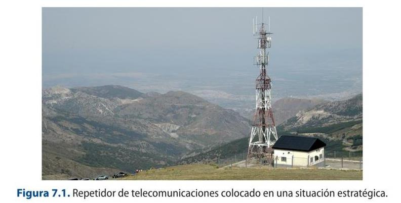
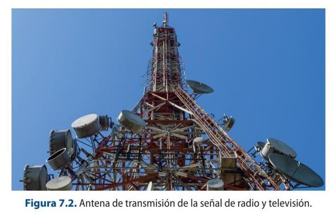
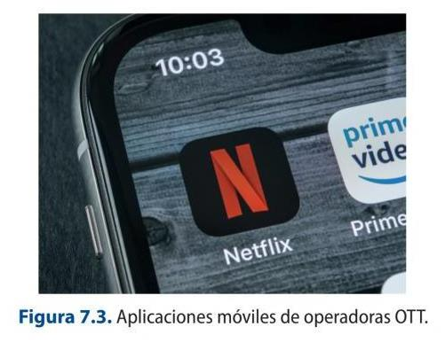
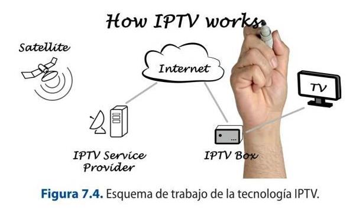
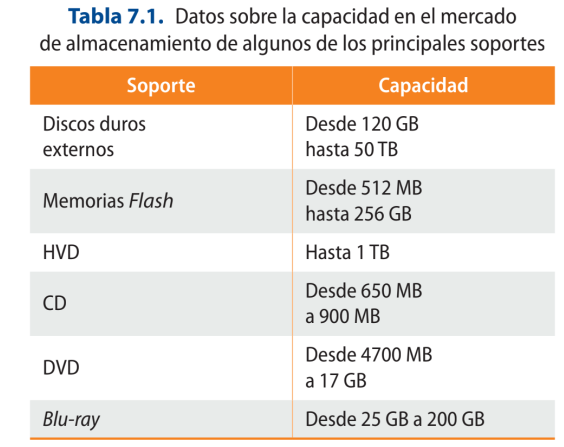
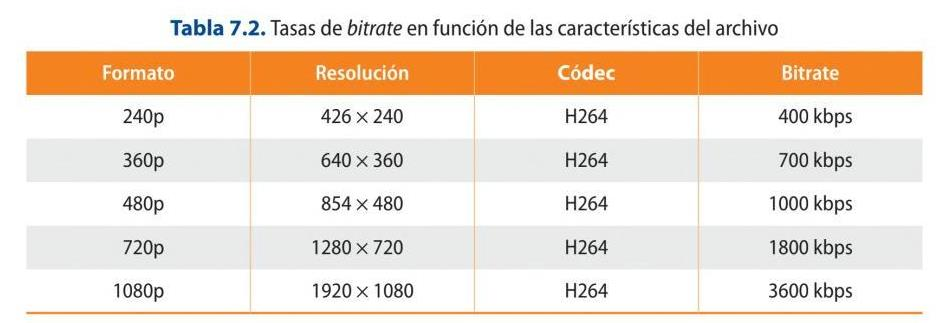
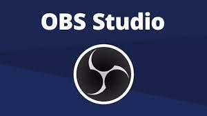
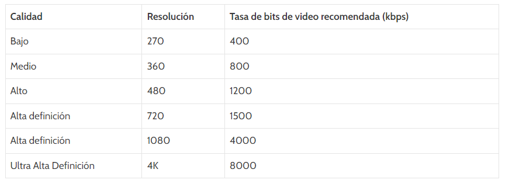
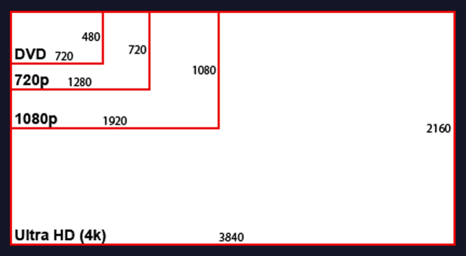

UNIT 7: TRANSMITTING AND BROADCASTING SYSTEMS
7.1. Definition of technical options and interactive qualities in radio, television, audiovisual and multimedia broadcasting.
Three different levels of protocols exist on the European continent:
1. Those drawn up by an international organization, thus creating an international standard.
2. Those drawn up by a European body, thus creating a European standard.
3. Those made by a national corporation, thus creating a national standard.
The creation of common standards and standardization guidelines aims to consolidate, increase and implement the use of new technologies, to establish greater accessibility to the different products, as well as an increase in the demand for them.
There are a series of agencies that are responsible for establishing the regulation that includes common standards:
International Telecommunication Union (ITU): this organization is responsible for drawing up recommendations on the technical aspects affecting the telecommunications sector worldwide.
The European Telecommunications Standards Institute (ETSI): pursues standardization in the information and communications technology sector in Europe.
The European Broadcasting Union (EBU): is a worldwide association of public service media.
7.2. Standards and broadcast formats
The television signal must be converted into electrical pulses so that they can then be transferred to receiving devices that decode the signal that has reached it by means of a transmission system. The television signal can be transmitted in a variety of ways:
1. Hertzian waves: to transmit this type of television signal, it is necessary to modulate the signal so that it can be radiated over long distances and be picked up by a receiving antenna, which uses a tuner to perform the reverse operation, i.e. it converts the electromagnetic signal into electrical impulses to be decoded into the images and audio that were transmitted. Some of the most significant characteristics of this type of system are:
a) They use a bandwidth of 6 MHz.
b) They are directional frequencies, so the coverage is smaller, so that to cover large areas of land it is necessary to use signal repeaters.

2. Satellite: Satellites are reception and transmission mechanisms that are located in space. This type of technology facilitates signal transmission over long distances using microwaves that can travel through the atmosphere without any loss. There are two types of satellites used to send audiovisual signals:
a) Passive: these satellites are used to reflect the signals sent to the selected station on Earth. They operate as a mirror.
b) Active: these are satellites that can perform more operations than transmitting the received signal; in addition, they can change and amplify before sending it again.
How does Satellite Television work?
7.1 How Satellite television works
Watch the previous video and take notes of the most important aspects
mentioned.
3. Cable: the television service offered by this type of transmission is more complete than the
previous one, such as a greater number of services, the possibility of greater interactivity and a
wider offer. In order to carry out this service, two basic systems are used to transport the signal:
a) Optical fibre.
b) Coaxial Cable.
4. Internet: this type of technology, in order to transport the television signal, is based on two
major technological improvements: broadband and the implementation of streaming technology.
5. Digital terrestrial television or DTT: this is a binary coding system applied to the audio and video
signals that make up the television signal.
Glossary
Antennas are widely used in the field of telecommunications. Antennas receive an
electromagnetic wave and convert it to an electric signal, or receive an electric signal
and radiate it as an electromagnetic wave. In this video we are going to look at the
science behind antennas

Digital terrestrial today: DVB-T2 and ATSC 3.0
Terrestrial broadcasting has moved to more efficient standards. Europe and much of the world use DVB-T2 (with HEVC) for HD/UHD, while North America and Korea are deploying ATSC 3.0 (‘NextGen TV’), an IP-based system that mixes over-the-air and broadband delivery, HDR and interactivity.
On the receiver side, HbbTV blends broadcast channels with on-demand content over the internet.
Sources: DVB-T2 (Wikipedia) · ATSC 3.0 (Wikipedia)
7.2.1. Transmission standards
In order to achieve these objectives, four transmission standards or norms have been created, which have advantages and disadvantages. The choice of one standard or another is important, as there is no compatibility between all of them, an aspect on which work continues to facilitate the implementation of new technological advances in a more effective way. These standards are:
DVB (Digital Video Broadcasting).
ATSC (Advanced Television System Committee).
ISDB-T (Integrated Services Digital Broadcasting).
DTMB (Digital Terrestrial Multimedia Broadcast).
DVB
This European standard improves performance in terms of picture and sound quality and the type of information that can be transmitted simultaneously, unlike the broadcasting systems previously used such as PAL, NTSC or SECAM. This type of model allows a large number of television programs, including HDTV, radio or digital information to be transmitted on the same channel using a standard bandwidth. On the other hand, it accepts the pay-per-view formula for content as information encryption systems to be used in those cases in which the user considers that access should be restricted or by the broadcaster, i.e. using different information encryption formulas. Finally, it facilitates the sending of test signals from the chain itself in order to be able to carry out the configurations in the receiver in a mechanical way.
The DVB model consists of several systems:
o DVB-S: allows the transmission of satellite television. It has a series of peculiarities, such as the use of 36 MHz bandwidth, the use of a data flow of 39 Mbps, digital modulation in quadrature phase and the use of different data interlacing systems to avoid signal problems derived from the transfer itself. It is usually common in those programs that support pay-per-view access. o DVB-C: for cable television transmission. It is characterized by the use of QUAM modulation, with a data throughput of 39 Mbps and lower signal losses. It allows Pay-TV and on-demand work.
Glossary
Quadrature Amplitude Modulation or QUAM (Quadrature Amplitude Modulation): allows two signals, called ASK, with the same frequency to be transmitted simultaneously, but which are 90° out of phase with each other.
This type of modulation system reduces economic costs and electricity consumption, promotes compatibility between different systems, improves the quality of the elements sent and is a more secure medium.
o DVB-T: is the digital terrestrial television transmission. It uses both OFDM modulation systems. It is important to note that both video and audio use MPEG-2 compression systems and support different screen resolutions, both interlaced and progressive, and different frame rates per second. On the audio level, it can also use AC-3 or DTS, so that it can send surround sound.
o DVB-H: Mobile TV is a television format that is accessed from a mobile device using the DVB-H transmission protocol. This protocol is based on the DVB-T standard used in DTT, but with some improvements, such as time-slicing (based on the multiplexing in time of
the transmission of the different services, which allows energy savings of up to 90%) and other techniques to eliminate the Doppler effect produced in moving devices.
But due to the low support of DVB-H, the use of Internet TV has become much more popular. Internet TV, also called IPTV or online TV, is TV distributed over the Internet using the streaming protocol. Any device with broadband Internet access can use it (without the need to be prepared for another special protocol). There are a multitude of applications for different platforms that allow us to view it:
IP contribution and 5G
Getting the signal from the venue to the station (‘contribution’) is now largely over IP: SRT and RIST for reliable transport over the public internet, SMPTE ST 2110 inside facilities, and cellular bonded uplinks / 5G backpacks for mobile live news and events.
7.2.2. IPTV AND OTT
Due to the great technological transformation that the content distribution sector, as well as other areas, has undergone, there are a series of factors that have modified the streaming distribution experience with the emergence of operators such as HBO, Netflix or Amazon Prime Video, among other platforms.
OTTs (Over the Top) are internet broadcasting services that provide users with access to a large amount of audiovisual content, both their own, insofar as they act as producers, and exclusive content produced by other producers. This content is presented in an orderly and easy-to-access manner, and recommendations are even offered based on the user's previous viewing and tastes.
Some of the main features of the service are:
Possibility to watch a product with different video qualities from SD, HD to UHD and data transfer speed.
Access to content is instantaneous, unlimited and on any device. Depending on the video-on-demand operator, the number of devices that can be accessed can even be extended. All this in exchange for a fixed fee.
They offer maximum compatibility between different viewing devices with a fixed or mobile internet connection.
In terms of content playback, they offer the possibility of stopping the viewing and resuming it where it was left off at the time, place and device of your choice.
Access to the user's content in any country in which he/she is located.
Audiovisual products have no commercial breaks, although they do make incursions at the beginning and end of the viewing.
There is no restriction on the cancellation of a subscription.
It is possible to have more than one user through a single subscription.
They have an important help center to solve doubts.

Another type of system used in streaming transmission is IPTV (Internet Protocol TV) which, unlike OTT, allows access to online television, i.e., it is a way of accessing television via the Internet but no connection is necessary, it simply works with the possibility of having the router or decoder turned on. The determining factor is the bandwidth contracted.
The IPTV system facilitates:
Interactivity as a way of working between two or more devices in a reciprocal way.
Fragmentation of the audience and, therefore, easier access to it.
Reproduction of the content with video display applications.
Possibility to download the program, save it and view it as many times as you want.
A much more individualized and unlimited offer in terms of paid services, interactive advertising, television in its different media, V.O. services, radio, etc.
It uses a specific fragment of the existing bandwidth.
IPTV systems are those televisions that transmit over IP, using the MPEG-2 or MPEG-4 compression protocol. When establishing the main operating scheme, several steps must be followed until the end customer is reached. The first phase corresponds to the content source, i.e. a video-on-demand system that accommodates the content to be offered and which can be distributed under different types of computer network systems. This information is received by a broadcast receiver, the service node, which performs the necessary operations to be able to modify the formats and broadcast them with the highest quality through the network that reaches the user and whose access will depend on the characteristics of the connection he has contracted, whether it is possible to reach his home and depending on the final reception computer equipment.
How IPTV Works?

7.3. Broadcasting and technical parameters of radio programme signals
The DAB or Digital Audio Broadcasting radio standard emerged in 1994 thanks to a European project called Eureka 147 by which the European Broadcasting Union and the European Union established standards for digital broadcasting services, which included a series of improvements with respect to the previous analogue treatment, such as better signal quality, a greater number of channels, fewer problems of signal interference or better flexibility when receiving the signal in portable devices such as those incorporated in car reception systems.
Digital systems can make use of the previous infrastructures used for analogue signal work, but will require a number of technological improvements for reception in particular. DAB is based on working with data structured in digital frames which can be sorted according to the transmitter's criteria to transmit a multi-channel or stereo signal as appropriate. Once the radio signal has been encoded, the signal is compressed to reduce the amount of data to be transmitted. The volume of bits per second or bit rate transmitted is 192 kbps.
The DAB standard allows transmitting, together with the sound information, another series of data related to the broadcast and related services to improve the end user's experience. By means of a multiplex channel, a QPSK (Quadrature Phase Shift Key) modulation process will be used to modulate the signal in phase, allowing a specific position to be established for the wave at a specific time within a system of coordinates to facilitate their detection by the receiver.
QPSK modulation is complemented by a transmission mode management that works after the modulation of the signal, called COFDM or Coded Orthogonal Frequency Division Multiplex. This mode consists of dividing the digital frame into small groups in order to modulate them individually using different frequencies in the carriers.
7.3.1. Modulation, frequency bands and analogue and digital radio standards
The broadcast signal leaving the audio mixing console is routed for transmission to the station's central control, where an alternating radio frequency current is applied to an antenna which will transmit electromagnetic waves. When the audio programme signal arrives at the transmitter, the first step is to adjust the level and passband of the audio frequencies by means of a limiter. Next, an encoder is used, which will be in charge of unifying into a single signal or multiplex signal to be transmitted to the antenna. Then, the modulation takes place, which will modify the information to be transmitted and elaborate the carrier signal.
Analogue TV and radio switch-off
Analogue terrestrial television has been switched off across most of the world (the ‘digital switchover’), and analogue radio is following via DAB+ and internet radio. Analogue broadcast parameters remain useful as background, not as current practice.
Watch a Video: Understanding Modulation!
The modulation process of the radio signal allows the information of the low frequency modulating signal to be carried, i.e. to encode a wave to be retransmitted. When a signal is modulated, two sidebands, upper and lower, are produced which have the same information as that contained in the modulating signal. This process can be done by two types of modulation of the analogue radio signal:
1. Frequency Modulation (FM or Frequency Modulation): the instantaneous frequency of the carrier varies over time as a function of the modulated signal. It is based on the variation of the modulation depth, i.e. it affects the differentiation of the centre frequency of the carrier wave which allows the appearance of numerous side bands, depending on the modulation index between the frequency deviation of the centre band and the modulation. 2. Amplitude Modulation (AM or Amplitude Modulation): where the amplitude of the carrier changes over time depending on the modulated signal. In this type of modulation, what is done is to decode one of the sidebands to proceed to the construction of the signal to be transmitted by means of what is known as single sideband (SSB). The main advantage of this is the reduction of the bandwidth, which favours the multiplication of channels. At the same time, it has a number of disadvantages, such as being easily interfered with by weather phenomena, for example.
Once the signal has been modulated, it must be routed to a final amplifier to provide sufficient radiofrequency power to reach the antenna. The amplification of the signal will depend on the desired range of the signal. Once the signal has reached the transmitting antenna, it is regulated for best performance, i.e. the signal has to be converted into an electromagnetic field to be transmitted via the broadcasting bands.
The broadcasting bands work in a width between 525 KHz and 1605 KHz for AM frequencies and between 87 MHz and 110 MHz for FM modulated frequencies.
Once the radio signal has been modulated and converted for broadcasting, it must reach a destination. In order to receive the signal, a tuner is used, which is an instrument that captures radio signals and processes them to transform them into information by means of a modulation process in a receiver with an amplifier, thus achieving a faithful representation of the information contained in the original signal.
7.4. Configuration of audiovisual products to be disseminated through digital media
The distribution of an audiovisual product on a digital support must take into consideration a series of aspects that favor both usability and compatibility between the different player devices, as well as the characteristics of the country in which it is marketed.
The audiovisual product can be designed for distribution on the Internet, VOD or video on demand to be distributed through a series of pay-per-view services and the use of digital distribution formats (for cinema, blockbuster or free-to-air digital television).
One of the main changes made in this regard has been the simultaneous release of film productions in cinema and VOD, leading to a loss of other sales such as DVD distribution or free-to-air television.
Everything must be adapted to the type of distribution window to be considered. It is important to point out, as has been mentioned in other units previously, that the distribution market for audiovisual products has changed a lot, especially since the incorporation of video-on-demand companies in the field not only of distribution but also of content production. This incursion has destabilized the traditional marketing market and is leading to its modification. Some of the main changes made in this regard have been the simultaneous release, in cinema and VOD, of film productions, leading to a loss of other sales such as DVD distribution or free-to-air television. An example of this is the film The Irishman (2019), by Martin Scorsese, which was released simultaneously in theaters and on Netflix.
7.4.1. Media types, capacities, video formats, audio and video encoding and decoding
In order to work with the final files and proceed to their reproduction, the types of media with their specific characteristics have already been discussed in previous units to be able to define the data.

7.4.2. Bitrate, Regions and Compatibility
The bitrate refers to the number of bits required to process a specific image in a given time. It is measured in bits per second (bps). This concept is closely linked to video resolution, since the higher the resolution, the higher the bit rate needed to be transmitted.
Although there is no standard to establish the bitrate necessary to work with the different video resolutions, it is possible to offer some guidelines to be able to operate with it.
Video Bit Rate

In order to know the bitrate necessary to be able to transmit a certain common file at a specific weight, calculation pages can be used, where, by entering the parameters referring to the file in question, the necessary result in bit per second is determined. The parameters needed to perform the calculations are:
File size in bytes.
The duration of the file in hours, minutes and seconds.
The audio bit rate.
An example of such a page offering the bitrate calculator: http://www.3ivx.com/support/calculator/index.html
Another parameter that affects the resulting bitrate of a file has to do with the type of codec used. Depending on this parameter, the bitrate can be:
Variable Bitrate (VBR)
VBR is an encoding method that allows for a variable bitrate, meaning that the bitrate of an audio file can increase or decrease dynamically depending on the complexity of the sound. If the music is very simple or there is silence for a few seconds, the bitrate can go down and then go up again in the more complex areas of a song.
The biggest advantage of VBR encoding compared to CBR is that for the same file size, a higher audio quality can be achieved, i.e. a smaller file for the same quality.
As you can guess, VBR encoding is more computationally complex than CBR, so it takes longer to encode audio using VBR.
Another disadvantage is that VBR encoded files may not be compatible with older electronic devices.
Constant Bitrate (CBR)
CBR is a type of encoding in which a fixed bit rate is always used, so if we encode a song at 192 Kbps, the resulting file will have a bitrate of 192 Kbps for the duration of the song.
CBR encoding also has another advantage and that is that we know in advance the transfer rate we need. For example, if we set a bitrate of 300 Kbps, we already know that with a connection of 320 Kbps we will be able to transmit the data without any dropouts, which is why it is often used in real time transmissions or streaming.
The difference between VBR and CBR lies in the possibility of adapting or not the bitrate to the quality of the video being encoded. When setting the required bitrate, in addition to the constituent parameters of the file itself, it is also important to know where the video is going to be played in order to set the values.
7.4.3. Authorship and browsing requirements
In the audiovisual field, authorship rights are managed by entities such as SGAE, CEDRO, DAMA or EGEDA. Technification has led to a number of changes in the concept of audiovisual works on the Internet, since the rights derived from electronic or digital publication on the web are not very well
established. Basically, therefore, two scenarios are envisaged for the commercialization of this type of works:
1. Streaming: limited access to the content.
2. Downloading: permanent access to content, which is downloaded.
The systems that allow data to be encrypted and distributed in such a way that access to them can be restricted by the creator of the content are known as DRM or Digital Rights Management systems. DRM has a number of advantages:
They promote the secure distribution of data. They facilitate the different remunerations that each party must obtain from the sale of the product. They guarantee the originality and authenticity of the files sold. They control the use of content by users.
DRMs, depending on the degree of restrictions they place on the content of the file, may be:
1. Hard: these are systems that limit access to content for both users and devices. Some examples of this type of system, mainly applied to the publishing field, are Adobe Digital Edition or Apple FairPlay.
2. Soft: the least restrictive systems in terms of access to information and number of devices. They can contain both author and buyer information. Some of the most commonly used soft DRM systems are Watermarking (marca de agua) or Fingerprinting (huella digital).
In the audiovisual sector, companies such as Netflix, Spotify or BBC apply these DRM systems to their content in order to monitor the type of use that is made of the content in terms of the generation of duplicates or any type of action that violates the rights of the works. Examples of DRM applied to film products are Content Scrambling System (CSS) or Protected Media Path (PVP).
7.5 Streaming Broadcasting
Video streaming means broadcasting live content over the Internet. Depending on the platform, the content can then be viewed or not. Therefore, we must always try to ensure that the quality is the best possible. And to achieve this, the first thing to understand is what and how it affects video streaming.
Streaming is conditioned by three key elements: hardware, software and the Internet connection itself. In addition, it is not the same to stream a game that we are running on the PC we are using for the live broadcast as it is to run it on a console or another computer. But we will see the different cases later, now let's see how each of these elements affects.
Hardware: the power of the PC is important. If, in addition, you want to use it to play games, you will need a CPU or graphics card with sufficient resources to not detract from either the gaming experience or the quality of the broadcast.
Software: the options provided by the applications used are also very important, especially if you want to show more than just the game's video signal. That is, if you want to show yourself playing, background music, etc.
Internet connection: the bandwidth of your connection will determine the quality of the streaming itself. It does not have the same impact as the other two essential elements for streaming, but it must be taken into account. And download speed is not as important as upload speed. So, do a speed test to get the facts.
Streaming delivery: OTT, HLS and DASH
Most viewing is now OTT streaming. Video is delivered with adaptive bitrate over HTTP — Apple HLS and the open MPEG-DASH — from a CDN, so the player switches quality to match the viewer's connection. Low-latency variants bring live streaming close to broadcast delay.
Sources: HTTP Live Streaming (Wikipedia) · MPEG-DASH (Wikipedia)
HARDWARE
Choosing or having the right hardware is the first thing to keep in mind. So, although there is some relation with the software as we will see later, having the most powerful components always helps. It is complicated to talk about minimum hardware, so we better talk about how it affects each component of a PC:
Processor: if you are going to use the X264 codec, it will be the CPU that will perform the encoding tasks. Therefore, having a powerful microprocessor such as an Intel Core i7 or some AMD processors with six cores or more is important. If, on the other hand, you use the NVENC codec, compatible with Nvidia graphics, you can stream and play with an Intel Core i5 or equivalent.
Graphics card: as already mentioned, if you have Nvidia GPU you can take advantage of the NVENC codec that offloads to the CPU and offers good performance without much loss of FPS when playing.
RAM memory: as for any other use you are going to make, the more RAM the better. Minimum 8 GB of memory, but if you are also going to play on the same PC, go for 16 GB.
Storage: if in addition to streaming you want to save the content locally, ideally you should have a separate and fast storage unit. So, preferably, use SSD drives.
Video capture: if in addition to broadcasting your game you want to be seen, you will need a video capture device to which you can connect the video signal you get through a video camera or DSLR type camera with HDMI output.
Webcam: another option, more economical, is to use a webcam or cameras that have the option to be used as a webcam. They will not give the same quality, but they can be useful if you do not want to make a big investment at the beginning, depending on the camera model you have, you could also take advantage of the applications they have been releasing to convert their DSLR or Mirrorless into webcams by simply connecting them via USB to the computer.
Monitors: if you just want to broadcast and be seen, without interacting with the viewers, you will be comfortable with a monitor. But if you want to follow comments in chats, etc., better two monitors so you can have the game in full screen on one and everything related to the broadcast on the second.
Lighting: it is important to be seen well, so having a set of quality lights is important. Here ideally they should also be LEDs, because they produce less heat and that will prevent you from sweating. Something really useful in summer or if the area where you live is generally hot.
SOFTWARE

Among the different options you can find for streaming, OBS is one of the most complete software solutions (not forgetting XSplit). In addition, there are many resources and guides to configure it optimally.
Basically, what you need to know is that OBS allows you to create custom screens and place the different sources in the screen position you want. You can also set technical aspects such as maximum bitrate value, codec used, stream resolution, frames per second, etc.
This is a bit complex at the beginning, but the only way to find the best possible configuration is to try it out. Even so, there are some schemes you can try based on the equipment you have, the quality you want to obtain and the content you are going to share.
720p quality: use 1280 x 720 resolution and bitrate between 1,500-4,000 kbps at 60 fps.
1080p quality: use 1920 x 1080p resolution and bitrate between 4.000-8.000 kbps at 60 fps
4K quality: use 3860 x 2160 resolution and bitrate between 8,000-14,000 kbps at 60 fps
Las mejores configuraciones de Bitrate para OBS Studio Internet Connection
It is very important to mention the particular requirements in terms of connectivity and speed, there is needed an internet connection fast and robust enough to be feeding this signal to the streaming server whether it uses a private CDN or public networks such as YouTube, Facebook Live, Periscope or Twitch.
Any of these services will need an excellent connection so that, while the signal is sent, it is then replicated to users or viewers. One of the most important points is, the different types of connections there are: fixed connections (which can be ADSL, Cable, Fiber Optic, etc.) and wireless connections (3G/4G/5G and Satellite).
A fixed connection is the best option because of a number of reasons:
- On a fixed connection there are fewer problems in terms of signal saturation because generally fixed connections are much faster and have much more power than mobile connections.
- The cable is not prone to interference like wireless signals, although it is known that the wireless Wifi signal has improved a lot with new standards such as 802.11n and 802.11ac.
The real reason for using a fixed connection is bandwidth. Let's see how the bandwidth issue works:
99% of internet connections are asymmetric, this means that we have more download speed than upload speed and to make a streaming transmission, what matters is not the download speed, what matters is the upload speed.
The upload speed has to be wide enough to be able to get this video signal transmitted properly. For reference, an average connection contracted from an operator and marketed as "10 megabytes" is 10 megabytes downstream, if it even has 1 megabyte upstream. And a connection sold as "100 megabytes" downstream, has at most 8 megabytes upstream.
Unless they are "symmetrical", which, as you can see from the prices, are much more expensive. And you may have them in your homes or offices, but it is not something massive yet in countries like Spain.
Bonding and 4G Backpacks
There are modem solutions called bonding solutions, which connect several 4G modems, this is something used by television networks. It is a small box to which several modems of telephony providers are connected at the same time and the speed of these four modems is combined to achieve bandwidth and thus achieve a better quality transmission. These are expensive equipment, so much so that there are even companies that only rent them by the hour. The major manufacturer of this equipment is called Teradek and they have the solutions. They are expensive equipment and besides we have to hire four 4G LTE modems (cellular) for this operation and the sim chip with its corresponding megas traffic purchased in advance.
The ideal in most scenarios, if we don't have the budget to go in with a bonding solution and so many cellular 4G LTE modems, is to use fixed connections and, as I was saying, verify that that connection is dedicated to us and verify the upload speed.
Now, in terms of streaming and in terms of quality, it works in HD 720p and FullHD 1080p for everything we do. However, for streaming purposes we have to consider, who is going to watch us and the speed of the connection of the people who are going to watch us and our upload speed.
Initially, streaming in FullHD 1080p may be very attractive. However, if people are not going to have the speed to watch that stream in FullHD, it doesn't make much sense. In fact, most people who stream don't stream in 720p HD.
In most cases, most people who work in HD go to 720p resolution as a ceiling and the reason is because of the upload speed. And the truth is that it looks good enough.
Recommended resolutions and speeds for streaming


Don't try more resolution than your connection can handle, because it won't work.
This is a very interesting and important point to consider because it can get you into a lot of trouble. If we want to stream in HD at 720p with 2.5 Mbps and we measure the signal with Speedtest and it is lower, and we do not have 2.5 Mbps; no matter what we do, the signal will be choppy and the user experience will be very poor. It is better to have a 360p stream that is stable than to have a 720p stream that is choppy. This is very important, consider it when planning your streaming.